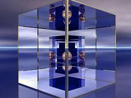
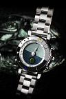
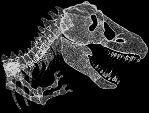
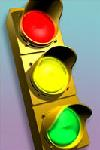
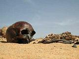

Time Travel
Time
The 4th Dimension

Of the four dimensions that currently define our universe, TIME remains the most puzzling of all. We can measure it, even to a trillionth of a nanosecond, but, we still don't know what it is and in particular, if we can travel through it like we can travel through space. Einstein's theories of Special and General Relativity set the stage for the cosmological phenomena of space-time. Civil Time--the time we use to set our clocks--is governed by astoundingly accurate atomic clocks. But when scientists start talking about black holes, wormholes, electromagnetic radiation and the search for the illusive "graviton," TIME takes on an entirely different meaning in Cosmological terms.
How does time affect the Future of Human Evolution? Well, one way to draw focus to the significance of TIME in our lives is to imagine this: What would happen if suddenly all the clocks stopped? As if that's not enough to warrant a double take at the clock on the wall, imagine if scientists actually create wormholes through particle accelerators allowing us to travel into the past or future?
In the article below, we get exposed to some interesting observations, perspectives, and questions on time that are addressed in the remaing articles of the Time series.
:: The Clock Is Ticking
Time rules every aspect of our lives. We get up in the morning, go to work or school during the day, and sleep at night. We are born on a certain day and time and die on a certain day and time. The two time coordinates of birth and death mark our existence on this planet. In between we mark every year with a birthday. Every event is stamped with time and date, from getting married to graduating from college to retirement.
Time might be the ultimate way we organize the universeour lives. From nanoseconds to millenniums, from daily routines to unexpected events, from young to old, our world is ordered in accordance to where everything is positioned on the map of time.

Whatever it is we are doingthe clock is ticking.
We have clocks on our wrists, clocks on our walls, clocks by our bedside and clocks embedded in nearly every appliance. Calendars are equally as ubiquitous. We get paid weekly, pay our bills monthly, and put a big x on the day our sons or daughters set for their wedding day.
When we were born, get married or die is no more important than where. Being born in Toledo, Ohio in 1932 carries a much different meaning than being born in Toledo in 2004. And in 1632 Toledo didnt even exist. How has Toledo changed? And why is it so important to be born in Toledo compared to New York or Singapore?
Talking about time is impossible without talking about place. Time and place are the lattitude and longitude of our being. Without time and place we would be mere floating entities of energy and matter. The meaning of time is different in Toledo than it is when determining the age of the universe. In Toledo we have families, identities and full lives. In the universe, we are mere specks on the solar winds of time.
Seems absurd we would have an outerspace but not an Outertime.
Some things move so slow its impossible to see the affects of time. If it wasnt for geologists and archeologists wed never know if a mountain once existed under an ocean or that creatures called dinosaurs once roamed the earth.
In some ways time seems to stand still and in others ways it seems to be the driving force of life. We have learned that in time all things must change. All things grow old and eventually die. Our emotions are governed by this knowledgeknowing the things we love will not last forever. We become deeply philosophical. We compare our lives to that of an old oak tree. It starts as a sprouting seed in spring then decays and withers in the harshness of winter many years later. But it doesnt just disapear. It becomes the source for new growth.
If the theory that matter changes but cannot be destroyed holds true, then death is not finality. Even for the most scientific, its hard not to believe we have spirits and that when we die they must go somewhere. Eternity is one of the greatest mysteries of life.
The efficiency of our global economic system depends on clocks and calendars, from machines calibrated by nanoseconds to 20-year projected economic forecasts. Retail and wholesale supplies depend on transportation schedules. If a shipment doesnt come in on schedule, jobs are at stake, profits could suffer, consumers complain. Bills must be paid on time. Factory workers and salespersons must fill quotas before certain deadlines. Our lives are centered on the standard workweek: 8 hours a day, 9-5, 5 days a week.
Newspapers are delivered everyday at the same time, although certainly not with the same accuracy as an atomic clock. Writers must get their articles in by a deadline. Projects must be completed by a certain date. Lawyers and taxi drivers charge by hours and minutes. Even prostitutes put a time limit on sexual pleasure. Investors make or lose millions depending on how well they time the stock market. For many people, time is money.
Doctors slice up and fill their days in 15-minute increments. Waiting rooms in doctor's offices are aptly named, since, thats what you do in the room is wait, even if youre on time for your appointment. Nothing pleases us on more than when the nurse calls out, The doctor will see you right away."
All machines are run by timing mechanisms. Machines eventually will wear out if not maintained or parts replaced. Some machines, such as atomic clocks, are accurately timed to billioneth and trillioneth of seconds. All of our clocks are governed by 59 atomic clocks synchronized by the United States Naval Observatory.
Breaks are breaks in time. Breaks are where time stands stilla section of time where we don't have to be doing what it is we are expected to do normally. Breaks are not necessarily always positive. Breaks are a time we dont get paid while on the job and too long a break could get us fired. Some breaks are almost rebelliouswe take them because we feel we deserve them even when someone else doesnt think so.
Creators and inventors live in a world of irony. What they create or invent could take years to reach fruition but only seconds to experience. Paintings are viewed in minutes. Movies last two hours. It takes seconds to heat a cup of coffee in a microwave oven. It takes a microsecond to turn on a light or start a car.
Inspiration does not operate on schedule. And when it strikes, it can be life changing, completely altering previous notions of time and space. There is more irony in that even though it took since the beginning of time to come up with the idea for a lightbulb or car, lightbulbs and cars are now manufactured in terms of quantity in relation to a set schedule.
Time is easier to understand in smaller increments. Its not easy to imagine the evolution of earth or even bigger stillthe universein terms of millions and billions of years. Besides, what practical value does such knowledge give us? The past and future play important roles in our lives, but not nearly as important as the here and now. What importance is there in knowing dinosaurs once roamed the earth or that at some point in the future the sun will burn out?

The past and future take on a whole different meaning when its personal. It would be an ironic use of time to calculate how much time we spend walking down memory lane, or planning our futures. The older we get the longer the walk down memory lane and the younger we are the more time we have to reach our goals.
The meaning of our lives is contingent on what weve done, what we are doing, and what we will doand all the while, the clock is ticking. Some people push the clock while others religiously adher to time like its a God. Did we live life to the fullest? Did we fill the years, days and hours with meaningful experiences or did we squander the time away in idle thought or chatter? Will we be rewarded in the afterlifean eternity in hell or an eternity in heaven? It seems from the minute were born to the minute we die, weve only got so much time toget it right.
Weve regulated our lives in a way so we are not dependent on the forces of nature for our survival. Regulating our lives with clocks and calendars provides a security system for survival. If we live by this system, we wont have to worry about spending our entire day hunting for food or shelter, like we used to do only so many years ago. We can count on grocery stores opening at a certain time and delivery schedules reliable enough to bring us the things we need. In the wild, it could take weeks to find food and the clock inside our bodies has time limits.

Its hard to say if humankinds clock is out of sync with the natural clockwhat is called our natural biorhythms. Not being on time or not doing something within a given time frame can cause tremendous anxiety. We dread standing in lines or being stuck in traffic jams. Our lives are filled with deadlines, appointments and commitments.
If our needs were taken care of and we didnt have to work, would our happiness then rise and fall with the rhythms of the sun? Would our hearts beat in time with the crash of ocean waves? Would our thoughts flow as lazily as a river? Would we have more time to love?
The rigidity imposed by clocks and calendars goes unquestioned in many circles of life. A military operation is effective depending on how well it meets the objective within a given time frame. The safety of a street depends on streetlights turning on before dark. Education is governed by the number of minutes it takes to get from one class to another to the number of years it takes to graduate.
How we divide our lives in years, months, days, hours, minutes, seconds and nanoseconds has both a positive and negative side. The first thing we do before making a decision is to look at our watches. When we decide to do something it is balanced against how long it will take and how it will benefit or interfere with our schedules.
We judge each other measured by the rules of time. Those who work longer than the standard 9-5 are often called workaholics. Time spent with family and friends is called quality time. Some people are accused of moving too fast, never taking the time to smell the roses. Others sit in front of TV night after night just wasting their lives away. A developmentally disabled person is called slow because it takes forever to tie a showlace or get in and out of a car.
We race against timean oxymoron. There are many ways we try to beat the clock. For some people, life is a quest of going to college directly out of high school, graduating with a Ph.D at 22 or 23, and becoming a millionaire before reaching 30. Anything that comes in under a deadline is always applauded, from newspaper stories to movie production schedules. Factory workers and salespersons try to beat quotas and are rewarded when they do.
Go-getters are obsessed with what little time they have in this life and are endlessly engaged in activities that fill their lives to the maximum. They must do everything before they die. They must fly an airplane, scuba dive, travel to exotic places, start a company, win a race, raise children and maybe even solve a world problem.
On the other side of the clock are those who just lay back, relax, and let it all happen. Those who live on the slower side of life may even have different values. They dont have to do everything life has to offer. Quality time can be as simple as laying in a grassy field with someone you love, watching clouds drift by.
Our lives are accumulations of birthdaysand for most, the more, the better. Some people cannot imagine living past a certain age. For humans, living past 100 is considered a major accomplishment and in terms of life expectancy, it certainly is. The same holds true for a 3 year old proud of the fact they will soon be 4.
Why is living longer better? It could be because we don't want to diethe end of time, as we know it. We know life goes on without us, but that doesnt offer much consolation from the fear of our own lives coming to a halt. Its disconcerting to think we are all just dust in the wind.
But, we have devised a solution to the finality of death. Eternitywhether courtesy of Mother Nature, a divine source or human madeprovides a wonderful place where we can live forever. Our soulssomething we cant hold in our handswill rise from our physical selves and go on to live foreverhowever long that is. Eternity has its drawbacks. Nothing can scare and control us more than the fear of living in that place down below where things arent so wonderful. And to think such punishment goes on without end is deeply disturbing.
The concepts of Heaven and Hell are more about time than they are places. Afterall, no one knows where Heaven and Hell actually are, with the exception of some vague idea one is up and the other is down. Heaven and Hell is more about how we see ourselves spending eternity, a reward or punishment for how we live our lives before we die.
Ironically, we believe in eternity yet we spent our lives chained to clocks and calendars. We must complete our bachelors degree in 4 or less years. We must be to class on time. We have until the end of the semester to turn a B into an A. We must be married by a certain age. We will break the speed limit to make an appointment but if speeding causes a car crash and we die, at least well have eternity to look forward to. Paradoxically, we are in a hurry to live forever.
Time is linear and non-linearanother paradox. Evolution takes place over time in a linear fashion. Birth to death is linear. But life is full of the unexpected. Mother Nature has a way of destroying all notions of time. We dont know when a meteor might strike. Still, some people believe fate is sort of a clock: things happen according to plan. Even though they cant calculate when a particular meteor might fall, they still believe it wont happen randomly.
Old age means retirement. It also means gray hair and sagging body parts. It means being closer to death. Getting old seems to be just about the worst thing that can happen in life. Its worse than death because at least in death we have eternity.
We celebrate the wiseman in movies, novels and other stories, yet in reality we throw old people away in nursing homes. Old people are like cows put out to pasture after no longer being able to produce. We rarely seek their advice. And in some cases, because of diseases like Parkinsons and Alzheimers, some older people are no longer able to function normally or coherently. Even when they are still fully functional in every way, in a fast moving economy, elders are considered non-productive simply because of prejudices towards age. They are considered a burden to society. This error in social judgement generates tremendous conflict and unhappiness.
However, for older people who have not yet been put out to pasture, age is power. The more experienced you aresomething that comes with agethe better equipped you are to negotiate the world around you. Allegedly you have learned from your mistakes and make less of them. You are more stable, less foolish, and less likely to get hurt. You get more things done in less time and by a certain agewhatever that may beyou have a better grasp on values and the meaning of things.
The generation gap seems to be an endless war of young versus old. Older kids pick on younger kids. Older people envy the folly of mispent youth. Older people dont necessarily get smarter and some younger people are wise before their years. Once past a certain age, youre no longer hip.
The ticking clock not only divides age but also gender. Women have a built in biological clock that tells them the best time of the month to get pregnant. The same clock tells them when its too late to have children. Men are not known to have such a clock but in terms of mating, they must adher to a womans rigid schedule.

Mother Naturewith the earth being the oldest clockplaces time restrictions on every move we make. Stay in the water too long and the body will shrivel up. Stay in the sun too long and, well, its like the the old Western movie where a cowboy rides past a skeleton lying in the blazing Nevada desert with two 6-shooters still strapped to the bones. And of course, we can only hold our breaths for so long before we pass out.
For those people responding to an emergency situation, time seems to stand still. There is only the moment, which could mean the difference between life and death. For the person in an emergency situation, time seems to take forever. Pain warps time. A person with cancer lives by a completely different clock than a person healthy enough to run a marathon.
A plane will get you across the ocean within a few short hours but youll never experience the waves like you would on a ship that takes days to cover the same distance. To marathon runners and racecar drivers, the finish line is what mattersnot the sites along the way. For some, getting from A to B in the fastest way possible is whats important, while others are more interested in the journey.
Most people want the sense of security that comes in growing old together with the ones we love. The longer we are together the greater the loss when we die. But time spent together is more accurately measured by quality than quantity. Love does not always last forever.
Time is essential in getting to know someone. The more time we spend with people the better we know them. However, people change. And no matter how much time or how well we think we know someone, we dont know everything. We change and we wear masks, continously altering our perceptions of time. Nothing disturbs us more than when criminals are discovered. We can know someone for years and have no idea they were serial killers, or plotting revenge, or were involved in abuse or molestation.
Perceptions of time could not be more dramatic than those of prisoners, especially when the sentence is for life. Its hard to imagine how time moves when a death penalty is about to be served. Does your life pass before you in an instant? Do you see eternity? Or are you solely focused on the pain you are about to experience?
Time can be dark and slow or bright and fast. Clocks fall off the wall when a baby is about to be born. Nowadays we usually know the gender before birth, so the old anticipation of Is it a boy or girl? becomes less climactic. How fast the baby learns to walk and talk is a measure of health, intelligence and physiology. As a teenager, just before graduation from high school, we hear the proverbial, Youve got your whole life ahead of you. Years later, we wonder where it all went.
^ Top ^